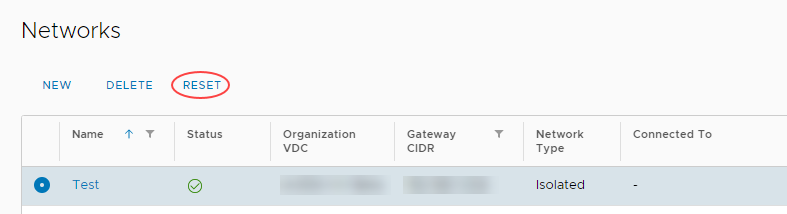
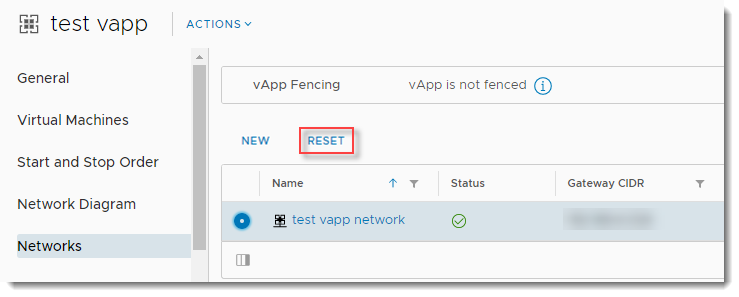

UKCloud Limited (“UKC”) and Virtual Infrastructure Group Limited (“VIG”) (together “the Companies”) – in Compulsory Liquidation
On 25 October 2022, the Companies were placed into Liquidation with the Official Receiver appointed as Liquidator and J Robinson and A M Hudson simultaneously appointed as Special Managers to manage the liquidation process on behalf of the Official Receiver.
Further information regarding the Liquidations can be found here: https://www.gov.uk/government/news/virtual-infrastructure-group-limited-and-ukcloud-limited-information-for-creditors-and-interested-parties
Contact details:
For any general queries relating to the Liquidations please email ukcloud@uk.ey.com
For customer related queries please email ukcloudcustomers@uk.ey.com
For supplier related queries please email ukcloudsuppliers@uk.ey.com
How to upgrade your edge gateway
Overview
It's important to keep your edge gateways up to date to ensure that you benefit from the latest features and enhancements.
This article shows you how to upgrade your edge gateway to the latest available version. If you need any assistance with the upgrade process, contact UKCloud Support by raising a Service Request in the My Calls section of the UKCloud Portal.
Different types of edge
VMware Cloud Director uses NSX edge services gateways in three main areas. These are all identical at the virtual network level, however feature exposure in VMware Cloud Director varies. Due to this, there are differences in the method to upgrade these underlying devices.
Organisation edge gateways
These are commonly referred to as edge gateways, and are by far the most widely understood. They provide VPN, NAT, firewall and routing functionality, and appear as the object Edge Gateway in VMware Cloud Director. These edges are referred to as edge gateways throughout this article.
To upgrade an organisation edge gateway, see Upgrading an organisation edge gateway.
Isolated organisation network edges
When you create an isolated organisation network in a VDC in VMware Cloud Director, DHCP services are enabled by default with a DHCP pool of any remaining IP addresses not used by any static IP pools specified for the network. A small NSX edge services gateway is deployed on the network to manage DHCP traffic. If you disable the DHCP service after creation of the network, the edge is removed.
To upgrade an isolated organisation network edge, see Upgrading an isolated network edge.
vApp network edges
vApps and vApp networks have some optional capabilities that require the use of an NSX edge services gateway in the underlying network. This is often due to the vApp being configured as fenced, requiring you to use NAT to communicate outside of the vApp. If you've configured a vApp network with any of the following, an NSX edge services gateway is required:
NAT
Firewall
DHCP Scope
Connection into an organisation network
To upgrade a vApp network edge, see Upgrading a vApp network edge.
Intended audience
To complete the steps in this guide you must have access to the UKCloud Portal and VMware Cloud Director.
Upgrading an organisation edge gateway
Important
Before you begin the upgrade process, bear in mind that this process requires downtime as a new VM needs to be deployed for the edge gateway. There will also be a brief network disruption for the networks that are used by the edge gateway instance. You should make sure that you have planned for this downtime before proceeding.
To upgrade an organisation edge gateway you need to redeploy the edge:
In the VMware Cloud Director Virtual Data Center dashboard, select the VDC that contains the edge gateway you want to upgrade.
In the left navigation panel, under Networking select Edges.

On the Edge Gateways page, select the edge that you want to configure.

Click Redeploy.

In the Confirm Redeploy dialog box, click OK.
Upgrading an isolated network edge
To upgrade an isolated network edge, you need to reset the network. This forces a redeployment of the edge used for the DHCP service.
Important
Before you begin the upgrade process, bear in mind that this process will disrupt DHCP server operations whilst the underlying edge is redeployed.
In the VMware Cloud Director Virtual Data Center dashboard, select the VDC that contains the network edge you want to upgrade.
In the left navigation panel, select Networks.

On the Networks page, select the isolated network that contains the edge you want to upgrade.

Click Reset.

In the Reset Network dialog box, click OK.
Upgrading a vApp network edge
An edge will be present on your vApp network if the network is:
Connected to an organisation network
Configured for NAT and/or firewall services
Configured to supply DHCP services (disabled by default)
To upgrade a vApp network edge you can either reset the network or shut down the vApp and restart it.
Resetting the network
One way to upgrade a vApp network edge is to reset the vApp network.
Important
Before you begin the upgrade process, bear in mind that this process will disrupt any traffic flowing into or out of the vApp network and DHCP services will be interrupted.
In the VMware Cloud Director Virtual Data Center dashboard, select the VDC that contains the vApp with the network edge you want to upgrade.
In the left navigation panel, select vApps.

On the vApps page, in the card for the vApp, click Details.

On the vApp details page, select the Networks tab.
Select the vApp network that contains the edge you want to upgrade.

Click Reset.

In the Reset Network dialog box, click OK.
Shutting down and restarting the vApp
Another way to upgrade a vApp network is to shut down the vApp and restart it. Restarting the vApp in this way recreates any networks in the virtual network space and deploys fresh vApp edges with the configuration held in VMware Cloud Director.
Important
Before you begin the upgrade process, bear in mind that all the vApp resources will be unavailable until the vApp restarts.
In the VMware Cloud Director Virtual Data Center dashboard, select the VDC that contains the vApp with the network edge you want to upgrade.
In the left navigation panel, select vApps.
On the vApps pages, in the card for the vApp, select Actions, then Power Off or Stop.
Note
You must shut down the vApp itself to trigger the deployment of fresh vApp edges; it is not enough to just power off all VMs inside the vApp.
After the vApp has shut down, in the vApp card, select Actions then Power On.
After the vApp has powered on, the vApp network edge will have been upgraded to the latest version.
Feedback
If you find a problem with this article, click Improve this Doc to make the change yourself or raise an issue in GitHub. If you have an idea for how we could improve any of our services, send an email to feedback@ukcloud.com.